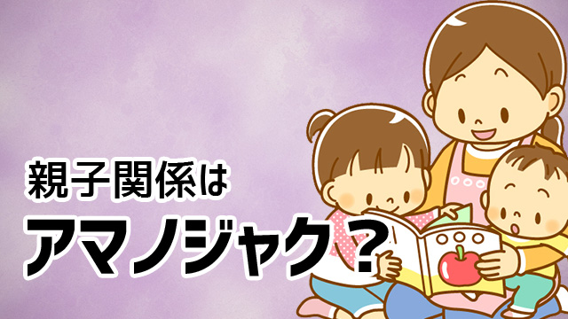

親子関係の難しさはどこにあるのでしょう。
親子の関係で一番厄介なことは、親が子どもに「こんな人になってくれたらいいな」という理想をもち、そのために色々しつけたり伝えたりと一生懸命やればやるほど子どもは逆方向へ行きやすいことです。
特に子どもは思春期になると親の思いを知ってか知らずか、まるでわざとのように親の期待にそむくような行動（言動）をとるようになりがちです。
子どもは天の邪鬼なのでしょうか？
それともたまたま「ウチの子はつむじまがり」なのでしょうか？
いちばん大きな理由は、子どもの中に親の言うなりになることへの拒絶の気持ちがひそんでいることです。
小学高学年くらいになると子どもにも自立心が生まれてきます。
それは親にコントロールされることへの反発という形で表れます。
ある意味、自立心は親への反発（反抗）を栄養にして育つものなのです。
親にしたら子どものためを思い、何とか良い人間になって欲しくて色々注意したりアドバイスしたり働きかけるわけですが、子どもにとってはそれは親の思い通りに操られることを意味し、その支配から免れようと逆方向へ逃走したくなるのです。
では、親は子どもに理想をもってはいけないのでしょうか？
努力することの大切さ。いま一生懸命勉強することの大切さ。約束を守ることや「やるべきこと」を先延ばしにしないこと、人に迷惑をかけないことから「宿題を前日までに終わらせること」や「朝ひとりで起きること」に至るまで、子どもに実行して欲しいことはたくさんあるでしょう。
言いたいことは山ほどあるのではないですか（笑）！
でも結論からいうと言葉で、つまり理くつで伝えようとしてもまず伝わりません。
理想をもつこと自体はよいとしても、それを意図的意識的に伝える行為は効果的ではないのです。
親の本音がダイレクトに伝わる
親が子どもに何かを伝えようとするとき「これが正しいことだからすべきである」という形をとりがちです。
これだと子どもにとっては「強制」になります。強制は子どもに「反発心」を起こすだけで決して自立的行動に結びつかないでしょう。
「べき論」は子どもの心の琴線にふれないからです。
理づめで子どもを説得しようとすることは親が犯しがちな誤りで、親子関係がぎくしゃくする最大の原因なのです。
ではどうするか？
まず親の皆さんに分かって欲しいことは、前回の記事（＝ココ）でも少し触れましたが親子関係では本音しか通用しないという原則です。
言いかえると、親が口で言う「正しいこと」よりも心の底で思っている「本音」こそが子どものふるまいに影響力を与えるということです。
あるいは親の無意識こそが子どもに伝わるといってよいかも知れません。
これは考えれば恐いことです！
いくら子どもに「努力が必要だ」「勉強が大切だ」と言っても、親自身が建前ではなく心の底からそう信じ、日ごろから何事にも努力を惜しまず学ぶ姿勢を保っているかどうか問われるからです。
これは親にとって耳の痛い話ですね。
私も書いていて耳が痛い（笑）！
でもそうなのです。本音しか伝わらないし頭で考えた正論より親の無意識が伝わってしまうのは事実です。
なので大事なのは、やはり本音で語ることでありなるべく言行一致で生活することです。
とかく親は自分の気持ちを正直に話すより、子どもの前では「べき論」を語りがちです。それは、子どもの前では「親は理性的であるべき」だというさらなる「べき論」にしばられているからです。
これではますます子どもの心から遠ざかる結果になります。
その点昔の親は本音で話していたように思います。
私が学校や塾で教え始めた頃、親はよく「先生、ウチの子勉強サボるようならブンなぐってやらせて下さい」とぶっそうなことを言ってきたものです。
背景には「自分は学歴がないために苦労したが子どもには同じ苦労はさせたくない
」という強い思いがあったからで、それはそれで本音のもつ迫力がありました。
こういう怨念というか強い感情に基く本音は確かに子どもに伝わります。
良し悪しは別として、子どもなりに「勉強の大切さ」は心に刻みつけられたのだと思います。
信じて手放すことの大切さ
しかしその「本音」が親の強すぎる思いこみやあまりに偏った信念だと、かえって子どもにマイナスに作用することもあります。
先の例でいえば、「自分は学歴がないために苦労した。だから子どもには何が何でも勉強させて学歴をつけさせる！」という本音の思いは確かに子どもに伝わるでしょうが、その結果「勉強はつまらないけどやらなければならない」義務と考え、勉強することの本質的な意味や価値を見いだせないまま育ってしまうことがよくありました。
何よりも親の強すぎる信念（本音であっても）の押しつけは、子どもの自立心をそこなう危険性が高いのです。
本音であるだけに強烈な「べき論」だからです。
では、親は子どもに対してどうあるべきなのでしょう。
親子関係を健全に保ちながら、子どもの自立心も育てかつ良い方向に伸ばしていく親のあり方とはどういうものなのか。
それに対する絶対的な模範解答はないものの、私が今おすすめしたい方法は次のようなものです。
- 子どもに対するコントロール権を一切放す
- 子どものことより「自分のこと」をやる
子どもに対する「コントロール権」と言うと、自分は子どもをコントロールするつもりなどないと言う親が続出しそうですが、残念ながら多くの親は子どもを思い通りにしようと心の底では思っています。
まずそのことを認めて下さい。コントロール欲求は誰でももっています。それは恥ではありません。そこには恐れの感情があるだけです。しかしそれは要らないものです。
「コントロールしないと不安だ」という思いに気づきそれを手放すことはできるのでしょうか。その思いこそが子どもを親の願いと反対方向へ走らせる大元－原因－となっていることに気づいて欲しいのです。
コントロール欲求を手放すことは、自動的に子どもを信じることにつながります。
その上で、子どもに「こうなってほしい」「ああなってほしい」という期待や理想も一緒に手放します。
その際「子どもは大丈夫だ。立派に生きていく」と信じてみて下さい。
「我が子なんだから当然だ」という気持ちで。
さて、それができたら次は子どもにばかり注意関心を向けるのではなく、自分のこと－自分のするべきこと－に目を向けましょう。
いったん子どものことは忘れるくらい、自分のことに向き合い集中する。
仕事でも趣味でも、悩みごとや解決すべき問題でも本来きちんと向き合うべきことは向き合い取り組むということです。
親である前に一人の人間として、自分の課題というものがあります。それが喜びである場合もつらいことである場合でも、正面から一生懸命とりくんでいる姿は子どもの心にもしっかりと焼きつくでしょう。
すべてのコントロール欲求を手放し、期待も手放し自分のことをやる。
私は「子どもに無関心でいる」とか「子育てを放棄しろ」と言っているのではありません。
親が子どもを支配しようとせず自分の「仕事」を懸命にやる姿勢から、子どもは自由と信頼されている喜びを感じ取り、自発的に自分のすべきことをやるようになるとお伝えしたいのです。
親がこのような姿勢を定着させると不思議なことが起こります。以前願っていたこと、期待していたことをいつの間にか子どもが成しとげていたりするのです。
意図的、意識的に「やらせよう」ともくろんだことは叶わない。
コントロールしようとせず、過度な期待も手放しただ子どもを信じて自分のことを夢中で行う。すると子どもは望ましい方向へ歩み始める。
不思議ですが本当です。
ぜひ実行してみて下さい。